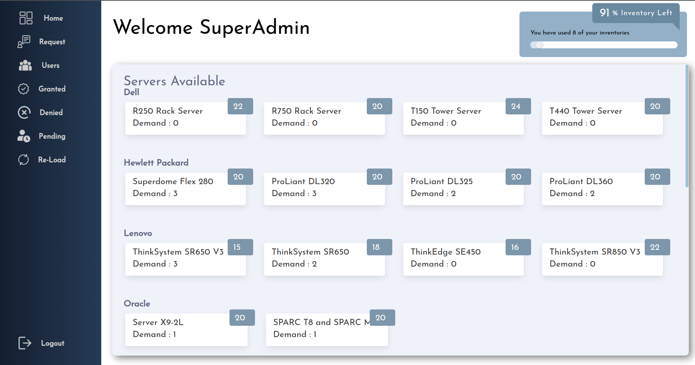
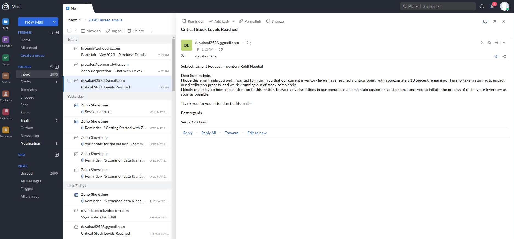
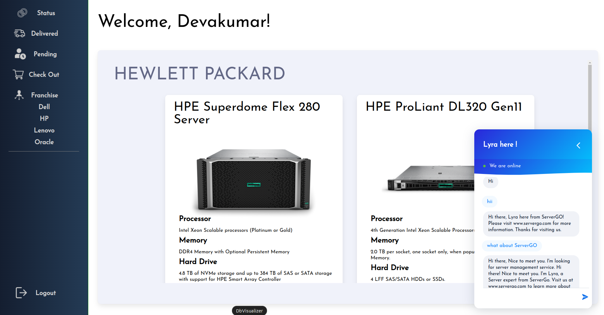
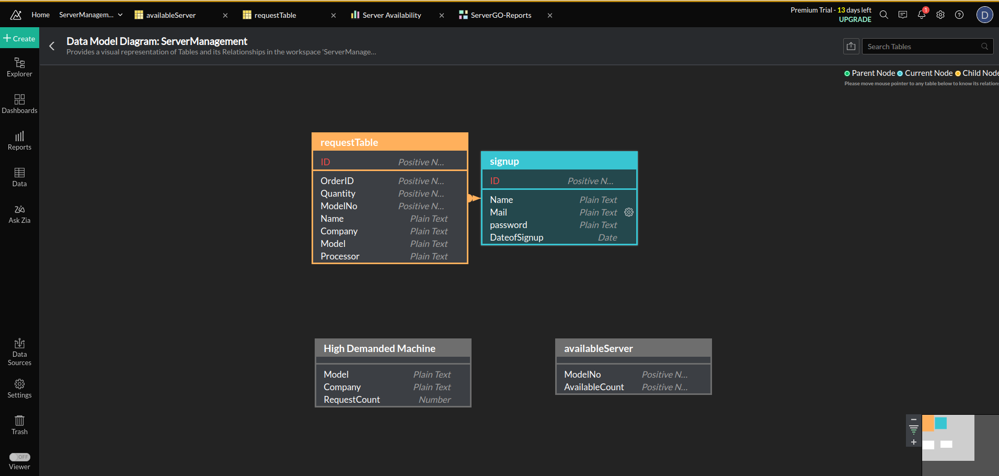
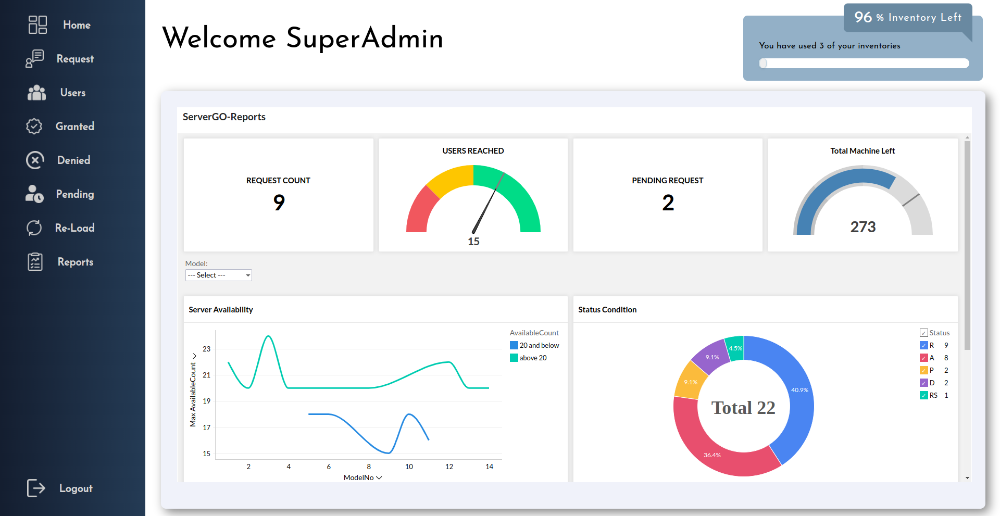

Welcome to ServerGO! This documentation provides an overview of our server inventory management system and
guides you on how to effectively utilize its features. ServerGO is designed to automate the allocation and
management of server resources, making it easier for administrators to fulfill user requests. Let's get
started!
ServerGO is a server inventory management system that enables administrators to efficiently allocate server
resources to users. It automates the allocation process, tracks inventory levels, and manages pending requests
when stock is low. With ServerGO, you can streamline the server provisioning workflow, ensuring efficient
resource utilization.
-
ServerGO empowers organizations with an intuitive server inventory management solution that eliminates the
complexities of manual resource allocation. By automating the server provisioning process, ServerGO saves
valuable time and resources, allowing administrators to focus on strategic tasks.
-
Designed with scalability in mind, ServerGO caters to businesses of all sizes, from small startups to large
enterprises. Its flexible architecture allows for seamless integration with existing infrastructure and
provisioning workflows, ensuring a smooth transition and minimal disruptions. Whether you have a handful of
servers or a vast network, ServerGO adapts to your needs, simplifying the management of server inventory and
streamlining the allocation process.
As it has many key features which are needed for a Inventory Allocation, They are as follows:
2. 1 User Request Management
ServerGO allows users to request server resources from the superadmin. These requests can be submitted through
a user-friendly interface.
2. 2 Automatic Allocation:
When a user makes a request, ServerGO automatically allocates available servers that match the requested
specifications. It assigns the server to the user and updates the inventory accordingly.
2. 3 Inventory Tracking
ServerGO keeps track of server inventory, including the number of available servers, their specifications, and
allocation status. It provides real-time information about the current stock levels.

2. 4 Pending Request
If the inventory is low or insufficient to fulfill a user's request, ServerGO puts the request in a pending
state. It keeps track of pending requests and automatically allocates servers when the stock is replenished.
2. 5 Notification
ServerGO sends notifications to both users and administrators regarding the status of their requests. Users
receive updates when their requests are fulfilled, and administrators are notified when stock is low or
replenished.

3. Password Encryption (SHA-256):
ServerGO utilizes the SHA-256 (Secure Hash Algorithm 256-bit) cryptographic hash function for encrypting user
passwords. SHA-256 is a one-way encryption algorithm, meaning that once a password is encrypted, it cannot be
reverse-engineered or decrypted to obtain the original password. By encrypting passwords using SHA-256,
ServerGO adds an additional layer of security to prevent unauthorized access to user accounts and sensitive
information.
public static String encryptPassword(String password) throws NoSuchAlgorithmException {
MessageDigest messageDigest = MessageDigest.getInstance("SHA-256");
byte[] hash = messageDigest.digest(password.getBytes()); // Hash the password using SHA-256
StringBuilder hexString = new StringBuilder(); // Convert the hash to a hexadecimal string
for (byte b : hash) {
String hex = Integer.toHexString(0xff & b);
if (hex.length() == 1) {
hexString.append('0');
}
hexString.append(hex);
}
return hexString.toString();
}
Select the code in the pad and hit Ctrl+R to watch it unfold in your browser!
4. Lyra Chatbot (OpenAI Integration)
ServerGO is equipped with an intelligent chatbot named Lyra, which enhances the user experience and provides
additional support. Lyra is designed to assist users in navigating the server request process and addressing
their queries. Here are some specifications of Lyra:
4. 1Natural Language Processing (NLP):
Lyra utilizes advanced NLP techniques to understand and interpret user queries and requests, allowing for more
conversational interactions.
4. 2Knowledge Base Integration
Lyra is integrated with ServerGO's knowledge base, enabling it to provide accurate and up-to-date information
about server availability, allocation status, and other relevant details.
Lyra offers a frequently asked questions (FAQ) module, where users can find answers to common queries related
to server allocation, inventory management, and other aspects of ServerGO.
public static String ask(String text) throws Exception {
String url = "https://api.openai.com/v1/completions";
HttpURLConnection con = (HttpURLConnection) new URL(url).openConnection();
con.setRequestMethod("POST");
con.setRequestProperty("Content-Type", "application/json");
con.setRequestProperty("Authorization", YOUR_API_KEY);
JSONObject data = new JSONObject();
data.put("model", "text-davinci-003");
data.put("prompt",text);
data.put("max_tokens", 2000);
data.put("temperature", 1.0);
con.setDoOutput(true);
con.getOutputStream().write(data.toString().getBytes());
String output = new BufferedReader(new InputStreamReader(con.getInputStream())).lines()
.reduce((a, b) -> a + b).get();
return (new JSONObject(output).getJSONArray("choices").getJSONObject(0).getString("text").toString());
}

5.1 User Registration: Users need to register an account with ServerGO to access the system. Provide necessary
user information and create login credentials.
5.2 Requesting Servers: Once logged in, users can submit server requests through the user interface. Specify
the required server specifications, such as CPU, RAM, storage, and any other relevant parameters.
5.3 Automatic Allocation: ServerGO will automatically allocate available servers that match the requested
specifications. Users will receive a notification once their requests are fulfilled.
5.4 Pending Requests: If there are insufficient servers to fulfill a user's request, ServerGO will put the
request in a pending state. The system will automatically allocate servers when stock is replenished.
5.5 Monitoring Inventory: Administrators can monitor server inventory levels through the ServerGO admin panel.
They can view available servers, pending requests, and other relevant information.
Here are some best practices to maximize the benefits of ServerGO:
6.1 Regularly Monitor Inventory
Keep an eye on server inventory levels to ensure timely replenishment and avoid prolonged pending requests.
6.2 Optimize Resource Allocation:
Configure ServerGO's allocation algorithms based on your organization's priorities and server utilization
patterns. This will help in efficient resource allocation.
6.3 Streamline Replenishment Process:
Set up automated systems or alerts to notify administrators when server stock reaches a predefined threshold.
This will facilitate prompt replenishment.
6.4 Gather User Feedback:
Continuously gather feedback from users to improve ServerGO's functionality and user experience. Consider
implementing user-requested features to enhance the system.
ServerGO utilizes Java methods extensively to implement its functionality and ensure efficient server
inventory management. Java methods serve as building blocks for different operations within the system.
Methods are used to handle user requests, allocate servers based on specified criteria, update inventory
status, and generate notifications. They encapsulate specific tasks and logic, promoting modularity and code
reusability. Java methods in ServerGO are designed to handle server allocation algorithms, password
encryption, inventory tracking, and communication with external systems. By leveraging the power of Java
methods, ServerGO achieves a robust and scalable architecture, allowing for easy maintenance, extensibility,
and reliable server provisioning processes.
1. getConnection() --> For Connecting Database
2. save(a,b,c) --> For Saving Name,Password,Mail in DB
Parameter a(String) = Name;
Parameter b(String) = Mail;
Parameter c(String) = Password;
3. signInValidation(a,b) --> For checking Login Details
Parameter a(String) = Mail;
Parameter b(String) = Password;
4. planInserting(a) --> For Inserting Request in DB
Parameter a = JsonObject containing of all the details
5. requestSuperAdmin() --> For creating a RestAPI of Request Information
No Parameter
6. approveRecord(JB),
denyRecord(JB),
pendingRecord(JB),
blockRecord(JB) --> These Methods performs editing the DB based on
Super Admin decision
Parameter JB = JsonObject containg of details
7. demandServer(),
remainingServer(),
approvedCount() --> These methods provide RestAPI for giving information for
Super Admin
No Parameter
8. ask(a) --> This method Connects with OpenAI by API LINK,
send request and gets response for Lyra Responses
Parameter a(String) = Request
9. encryptPassword(a) --> Encrypt Password based on SHA-256
Parameter a(String) = Actual Password
Data modeling in ServerGO plays a crucial role in organizing and structuring the information related to server
inventory and allocation. The data model represents the entities and their relationships, providing a
foundation for the efficient storage and retrieval of data. In ServerGO, the data model encompasses entities
such as servers, users, requests, and inventory status. The server entity includes attributes like CPU, RAM,
and storage capacity, while the user entity stores user information such as name and contact details. The
request entity captures details of user requests, including the requested server specifications and status.
The inventory status entity tracks the availability and allocation status of servers. By carefully designing
and implementing the data model, ServerGO ensures accurate and reliable data storage, enabling smooth server
allocation and seamless inventory management.

9.Report(Zoho Analytics Integration)
ServerGO leverages the power of Zoho Analytics for comprehensive data analysis and reporting. The integration with Zoho Analytics allows ServerGO to generate insightful reports and visualizations based on server inventory and allocation data. By extracting data from the ServerGO database, Zoho Analytics enables
administrators to gain valuable insights into server utilization, pending requests,
and inventory trends. With its intuitive interface and powerful analytical capabilities, Zoho Analytics empowers administrators to make informed decisions and optimize resource allocation strategies.
The integration ensures seamless data synchronization between ServerGO and Zoho Analytics, providing real-time and accurate reporting for better visibility and control over server inventory management. ServerGO users can access customized dashboards,
interactive charts, and scheduled reports, enabling them to monitor key metrics and trends for efficient server provisioning. The integration of Zoho Analytics elevates the analytical capabilities of ServerGO, enhancing the overall effectiveness of the server inventory management system.

Zoho Analytics employs the powerful Data Bridge feature to seamlessly integrate data from multiple sources into ServerGO. With Data Bridge, ServerGO can connect to various data repositories, including external databases, cloud storage, and
third-party applications. This integration enables ServerGO to fetch relevant data from disparate sources and consolidate it into a unified data model within Zoho Analytics. By configuring data connections and mapping fields, Data Bridge ensures the
synchronization of data between ServerGO and Zoho Analytics, providing a comprehensive and up-to-date view of server inventory and allocation. The flexibility and scalability of Data Bridge allow ServerGO to handle large volumes of data efficiently, enabling administrators
to perform complex analyses and generate insightful reports. The utilization of Data Bridge in Zoho Analytics further enhances the data integration capabilities of ServerGO, enabling seamless
access to consolidated and accurate data for informed decision-making.
In conclusion, ServerGO revolutionizes server inventory management by automating resource allocation and
provisioning workflows. It optimizes server utilization, eliminates manual complexities, and ensures efficient
resource allocation. With ServerGO, organizations can streamline server provisioning, saving time and
resources while maximizing operational efficiency.
The integration of the Lyra chatbot enhances user experience by providing interactive support and guidance.
Lyra's natural language processing capabilities enable conversational interactions, assisting users in
navigating the server request process. By leveraging the power of AI, ServerGO with Lyra simplifies user
interactions, improving overall user satisfaction and productivity.
Security is a top priority for ServerGO. By implementing the SHA-256 password encryption algorithm, user
passwords are securely stored and protected against unauthorized access. The use of salted hashes further
enhances security, ensuring robust protection against brute-force and dictionary attacks. ServerGO's
commitment to data security instills trust and confidence in users, safeguarding their sensitive information.
ServerGO caters to organizations of all sizes, from startups to large enterprises. Its scalability and
flexibility make it adaptable to various infrastructure setups. Whether managing a handful of servers or a
vast network, ServerGO seamlessly integrates into existing systems, simplifying server inventory management
and streamlining allocation processes. With ServerGO, businesses can efficiently manage server resources and
focus on strategic tasks, driving growth and innovation